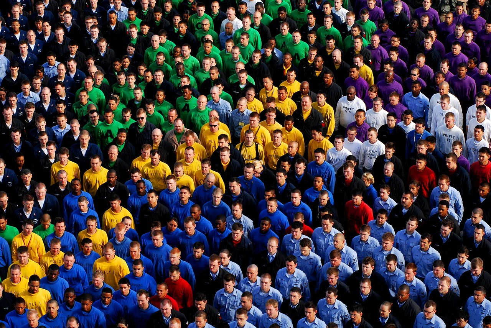

Environnement

Démographie

Territoire

Insertion
Environnement
Démographie
Territoire
Insertion
#ID : Identifiant ODCEEL de la station
Nom de la station : Zone hydrographique au sens de la BD Carthage.
Type de station :Altitude de la station en m. NGF
Validation
Dates de débuts et de fin des mesures
Données météorologiques issues des stations climatologiques du Conseil Départemental de l'Hérault.
Les stations automatiques et manuelles sont propriété du Conseil Départemental de l'Hérault sur les périodes de mesures. Les stations manuelles sont relevées par des observateurs bénévoles qui contribuent à l'enrichissement de la base de données départementale.